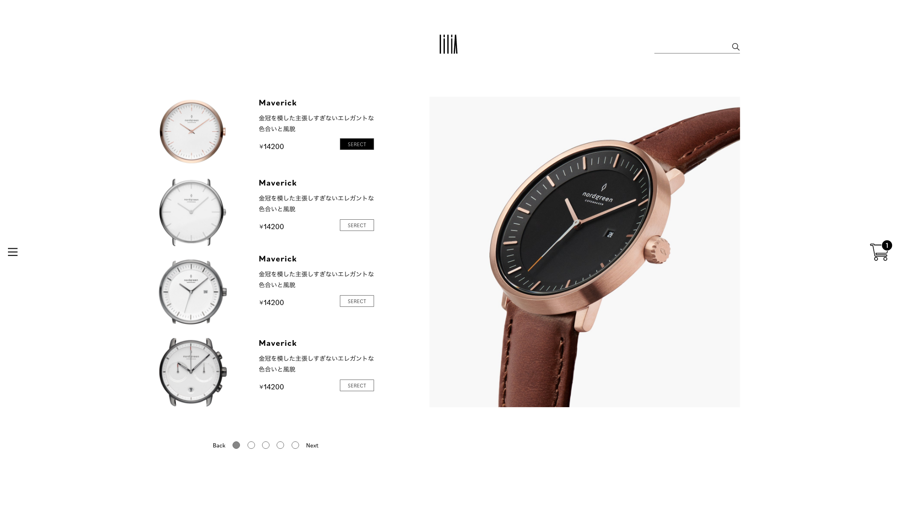

時計専門店lilia
WebDesign/VI
時計専門店の架空の会社を想定しwebデザインとロゴのデザインを行いました。
ロゴデザインから作成するのは初めてだったため、いい練習にもなりました。
時計の針をイメージした細身のロゴが特徴的で、細かく計算を行い、美しく、さまざまな場面で使いやすいロゴを設計しました。
webの方では特徴的な選択画面を作成しました。オリジナルの時計を作ることができるサイトなので、使いやすく、初めてでもわかりやすいようにUIの部分を考えてデザインを行いました。


時計専門店の架空の会社を想定しwebデザインとロゴのデザインを行いました。
ロゴデザインから作成するのは初めてだったため、いい練習にもなりました。
時計の針をイメージした細身のロゴが特徴的で、細かく計算を行い、美しく、さまざまな場面で使いやすいロゴを設計しました。
webの方では特徴的な選択画面を作成しました。オリジナルの時計を作ることができるサイトなので、使いやすく、初めてでもわかりやすいようにUIの部分を考えてデザインを行いました。